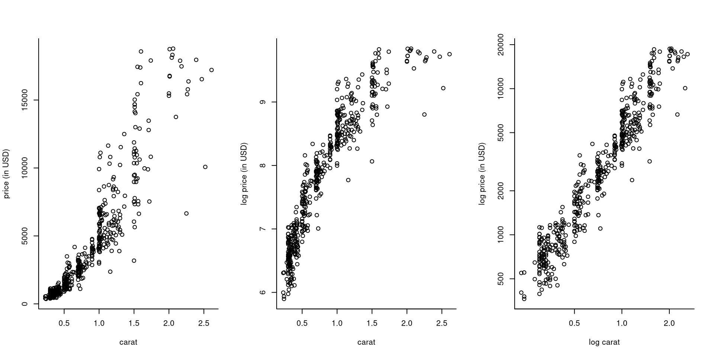
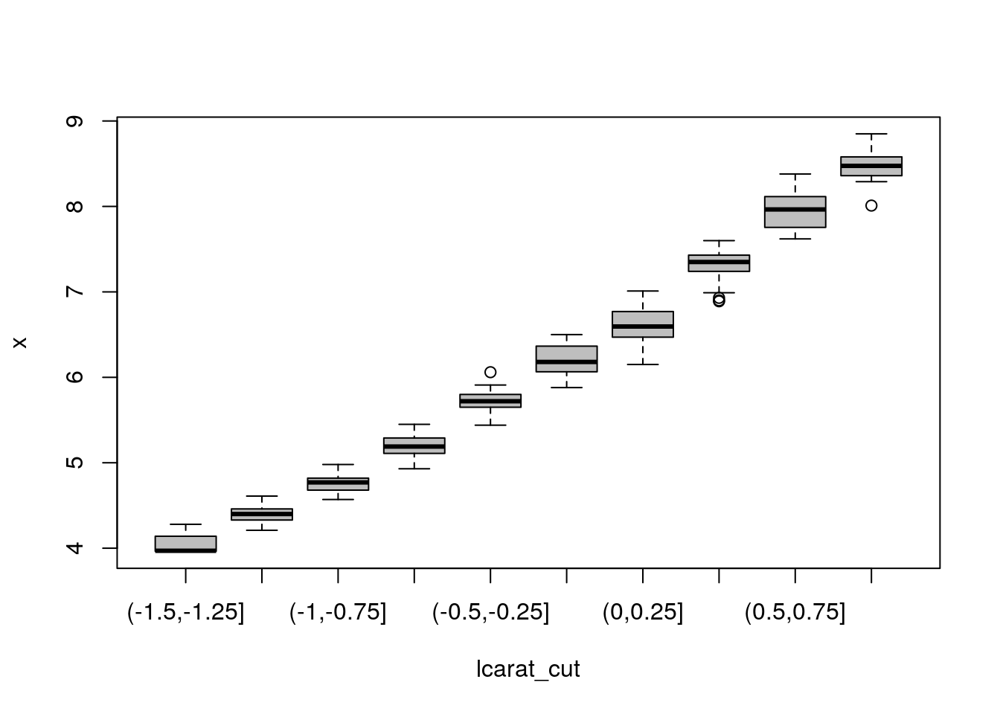
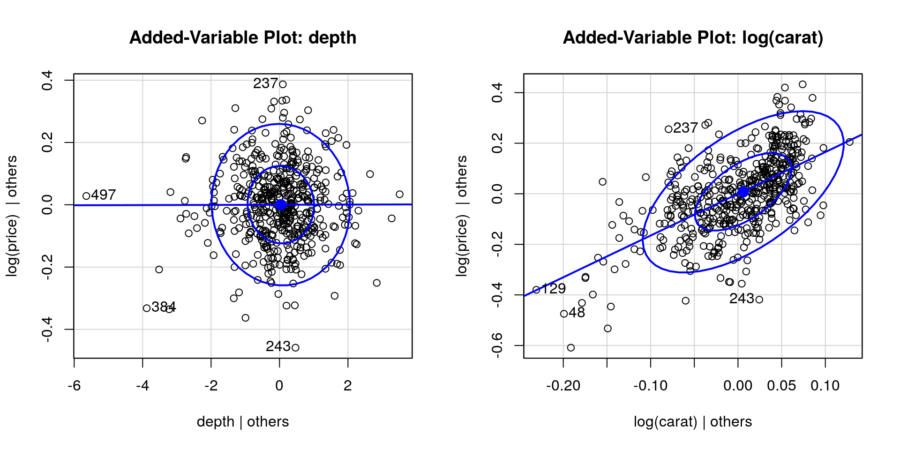
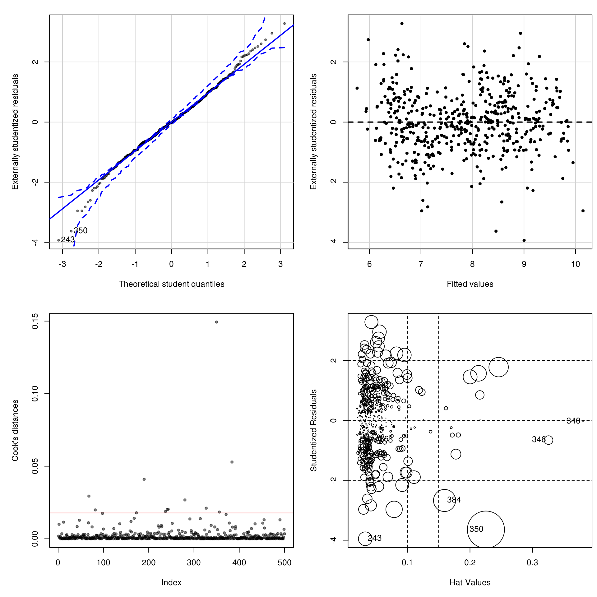

7.1 Example: Price of diamonds
This very large dataset contains the price in USD (rounded to nearest dollar) of \(n=53940\) diamonds. The explanatory variables include three ordinal factors: the quality of the cut, color and clarity. These are ranked from worst to best outcome. Five other variables contain the mensurements of the dimension of the diamond, rounded to the 0.01 mm. They are length x, width y, depth z, total depth percentage depth where depth\(=2\times z/(x + y)\), and table, a measure of the width of the top of the diamond. The last variable is the weight of the diamond, carat, rounded to the nearest 0.01.
#install.packages("ggplot2")
library(ggplot2); library(car)
data(diamonds, package = "ggplot2")
help(diamonds)
#Subsample because the dataset is very large
set.seed(1234) #Fix RNG seed so as to make output reproducible
di <- diamonds[sample.int(size = 500, replace = FALSE, n = nrow(diamonds)), ]
attach(di)7.1.1 Exploratory data analysis
We can look at some graphs of the data, including pair plots and some summary statistics. These are useful to spot outliers.
str(di)## Classes 'tbl_df', 'tbl' and 'data.frame': 500 obs. of 10 variables:
## $ carat : num 0.91 0.43 0.32 0.33 0.7 0.33 0.71 1.3 0.43 2.06 ...
## $ cut : Ord.factor w/ 5 levels "Fair"<"Good"<..: 5 4 5 5 2 5 4 2 4 5 ...
## $ color : Ord.factor w/ 7 levels "D"<"E"<"F"<"G"<..: 4 1 1 4 5 4 2 7 2 6 ...
## $ clarity: Ord.factor w/ 8 levels "I1"<"SI2"<"SI1"<..: 2 3 4 2 3 7 4 4 2 4 ...
## $ depth : num 61.6 60.1 61.5 61.7 64.2 61.8 62.3 63.6 60.8 62.2 ...
## $ table : num 56 58 55 55 58 55 58 59 58 55 ...
## $ price : int 3985 830 808 463 1771 868 2823 5269 919 18779 ...
## $ x : num 6.24 4.89 4.43 4.46 5.59 4.42 5.71 6.9 4.88 8.15 ...
## $ y : num 6.22 4.93 4.45 4.48 5.62 4.45 5.66 6.87 4.86 8.19 ...
## $ z : num 3.84 2.95 2.73 2.76 3.6 2.74 3.54 4.38 2.96 5.08 ...apply(di, 2, range)## carat cut color clarity depth table price x y
## [1,] "0.23" "Fair" "D" "I1" "55.4" "53.0" "10076" "3.96" "3.99"
## [2,] "2.61" "Very Good" "J" "VVS2" "69.8" "67.0" " 9970" "8.85" "8.79"
## z
## [1,] "1.53"
## [2,] "5.60"print(GGally::ggpairs(di[,-(2:4)], progress = FALSE))
table(cut)## cut
## Fair Good Very Good Premium Ideal
## 16 46 100 123 215table(clarity)## clarity
## I1 SI2 SI1 VS2 VS1 VVS2 VVS1 IF
## 7 89 110 118 76 44 36 20table(color)## color
## D E F G H I J
## 57 100 77 89 95 52 30graphics.off()
plot(density(carat, bw = 0.02), main = "Density estimate of carat")The most important variable is likely to be weight or width (which are strongly correlated). An explanatory data analysis reveals the relationship between carat and price to be non-linear. A logarithmic transformation of both the price and carat alleviates this and reveals the discretization of the measurements (most of the diamonds have a reported weight of 1 or 2 carats). The linear correlation between the variables x, y and z is close to unity (due to the regular cut of diamonds). This will potentially lead to collinearity, so the variables may not be jointly significative. There is (depending on the subset) a clearly visible outlier in z hat should be removed. There is no evidence of interactions between the categorical variables and the rest (not shown). Lastly, depth and table are apparently not linearly correlated with price.
par(mfrow = c(1, 3), bty = "l")
plot(x = carat, y = price, ylab = "price (in USD)", xlab = "carat")
plot(carat, log(price), ylab = "log price (in USD)", xlab = "carat")
plot(carat, price, log="xy", ylab = "log price (in USD)", xlab = "log carat")
A careful explanatory data analysis with the full model reveals that, despite the fact depth is a transformed variable supposedly created from x, y and z, there are some outliers (summary(lm(depth ~ -1 + I(z/(x+y)), data = diamonds))). The model is likely to predict poorly 1 carat and 2 carats diamonds, for which there is a lot of heterogeneity.
Sometimes, it helps to regroup the regressors to better identify patterns. This is most useful in situations where there is a lot of noise in the response (not the case here).
lcarat_cut <- cut(log(carat), breaks = seq(-1.5, 1, by = 0.25))
boxplot(x ~ lcarat_cut, col = 'grey')
7.1.2 Model selection
We will start with a model with all regressors but y and z (which we eliminate on grounds of multicollinearity).
#Small model
redu_mod <- lm(log(price) ~ log(carat))
#Unordered factors (so they are interpretable)
#Ordered factors use an orthogonal decomposition
cut <- factor(cut, ordered = FALSE)
color <- factor(color, ordered = FALSE)
clarity <- factor(clarity, ordered = FALSE)
#Full additive model
full_mod <- lm(log(price) ~ log(carat) + cut + color + clarity + depth + table + x)
summ_full <- summary(full_mod)
knitr::kable(coef(summ_full), digits = 3)| Estimate | Std. Error | t value | Pr(>|t|) | |
|---|---|---|---|---|
| (Intercept) | 7.159 | 0.698 | 10.255 | 0.000 |
| log(carat) | 1.651 | 0.101 | 16.283 | 0.000 |
| cutGood | 0.118 | 0.040 | 2.964 | 0.003 |
| cutVery Good | 0.114 | 0.040 | 2.878 | 0.004 |
| cutPremium | 0.143 | 0.039 | 3.641 | 0.000 |
| cutIdeal | 0.142 | 0.042 | 3.404 | 0.001 |
| colorE | -0.056 | 0.021 | -2.604 | 0.009 |
| colorF | -0.091 | 0.023 | -3.967 | 0.000 |
| colorG | -0.161 | 0.022 | -7.233 | 0.000 |
| colorH | -0.270 | 0.022 | -12.233 | 0.000 |
| colorI | -0.400 | 0.026 | -15.568 | 0.000 |
| colorJ | -0.547 | 0.030 | -18.422 | 0.000 |
| claritySI2 | 0.659 | 0.053 | 12.388 | 0.000 |
| claritySI1 | 0.807 | 0.053 | 15.180 | 0.000 |
| clarityVS2 | 0.952 | 0.053 | 17.940 | 0.000 |
| clarityVS1 | 1.035 | 0.054 | 19.192 | 0.000 |
| clarityVVS2 | 1.144 | 0.056 | 20.457 | 0.000 |
| clarityVVS1 | 1.224 | 0.057 | 21.461 | 0.000 |
| clarityIF | 1.341 | 0.060 | 22.164 | 0.000 |
| depth | 0.000 | 0.005 | 0.049 | 0.961 |
| table | -0.007 | 0.004 | -1.634 | 0.103 |
| x | 0.132 | 0.053 | 2.522 | 0.012 |
RSS_full <- summ_full$sigma^2 * summ_full$df[2]
#RSS_full <- crossprod(resid(full_mod))[1]The model fit is excellent. Unsurprisingly, all of x, y and z are not marginally significant if they are all included at once (output omitted), but x is if it is the only one included.
Recall that the t value column gives the Wald statistic \(t = \hat{\beta}_i/\mathrm{se}(\hat{\beta}_i)\), for the null hypothesis \(\beta_{i}=0\) against the two-sided alternative \(\beta_{i} \neq 0\). Under \(\mathscr{H}_0\), \(t \sim \mathcal{T}(n-p)\) and the \(P\)-value is \(2\times (1-\)pt\((t, n-p))\). It appears that we could get rid of depth and table, which contribute little overall. This is confirmed graphically using added-variable plots, which plots \(\mathbf{M}_{\mathbf{X}_{-j}}\boldsymbol{y}\) against \(\mathbf{M}_{\mathbf{X}_{-j}}\mathbf{x}_j\). This is the residual effect of \(\mathbf{x}_j\) after taking into account the effect of the other variables \(\mathbf{X}_{-j}\) on what remains of the response. If the variable was important, there would be a strong correlation in the variables and the slope would be non-zero. The last plots illustrates what you could see if there was residual structure (strong positive or negative correlation) or lack thereof.
par(mfrow = c(1, 2))
car::avPlot(full_mod, variable = "depth", ellipse = TRUE)
#slope close to zero indicates lack of relationship
car::avPlot(full_mod, variable = "log(carat)", ellipse = TRUE)
Let us look at model simplifications.
We can obtain the \(F\) statistic for the null hypothesis \(\mathscr{H}_0: \beta_{\texttt{depth}} = \beta_{\texttt{table}}=0\) against the alternative \(\mathscr{H}_a: \{(\beta_{\texttt{depth}}, \beta_{\texttt{table}}) \in \mathbb{R}^2\}\) by running the anova command:
anova(lm(log(price) ~ log(carat) + cut + color + clarity + x), full_mod)## Analysis of Variance Table
##
## Model 1: log(price) ~ log(carat) + cut + color + clarity + x
## Model 2: log(price) ~ log(carat) + cut + color + clarity + depth + table +
## x
## Res.Df RSS Df Sum of Sq F Pr(>F)
## 1 480 7.8077
## 2 478 7.7503 2 0.057353 1.7686 0.1717The test statistic is of the form \[F = \frac{(\mathrm{RSS}_a-\mathrm{RSS}_0)/2}{\mathrm{RSS}_0/478}\sim \mathcal{F}(2, 478)\] and here \(F=\) 1.769; we fail to reject the null (\(P\)-value of 0.172). We have no evidence against the adequacy of the simpler model.
Since there is little difference between the reduced model RSS and that of the full additive model, we may employ either in subsequent ANOVA tests. Let us try to drop one of the remaining variables.
drop1(lm(log(price) ~ log(carat) + cut + color + clarity + x), test = "F")## Single term deletions
##
## Model:
## log(price) ~ log(carat) + cut + color + clarity + x
## Df Sum of Sq RSS AIC F value Pr(>F)
## <none> 7.8077 -2039.8
## log(carat) 1 5.7660 13.5737 -1765.2 354.4787 < 2.2e-16
## cut 4 0.4411 8.2488 -2020.3 6.7788 2.59e-05
## color 6 10.1359 17.9436 -1635.7 103.8552 < 2.2e-16
## clarity 7 18.5675 26.3752 -1445.1 163.0697 < 2.2e-16
## x 1 0.0961 7.9038 -2035.6 5.9062 0.01545You could write the test statistics as before (with the difference in the degrees of freedom equal to the number of factor levels minus one if the variable is categorical). All the terms are statistically significant and we reject the null hypothesis of any of the tests at level \(\alpha = 5\%\). This step would mark the end of the backward elimination procedure. Note that you can (and may wish to) use the RSS from the full model full_mod in the denominator of your \(F\)-tests to avoid biasing your results if retaining the null leads to a sharp decrease.
If your test statistic is small, you cannot conclude anything. This may be because the null hypothesis that the simpler model is adequate is true. It can also be due to a lack of power (you should reject, but there are not enough evidences against the null). If you proceed with the RSS from the null model, your test statistic will then be biased downward; recall section 5.1.3.
We could equally well have started with forward selection. All the variables lead to a decrease in RSS that is significant at level \(\alpha = 5\%\). We pick the most significant one and proceed.
add_step1 <- add1(redu_mod, scope = formula(full_mod), scale = RSS_full, test = "F")
form <- deparse(formula(redu_mod))
while(length(which(add_step1[,"Pr(>F)"] < 0.05)) > 0){
new_var <- rownames(add_step1)[which.max(add_step1[,"F value"])]
form <- paste(form, new_var, sep = " + ")
add_step1 <- add1(update(redu_mod, formula = form),
scope = formula(full_mod), scale = RSS_full, test = "F")
}The more we test using the ANOVA command, the more size distortion due to multiple testing (the type I error is inflated). A Bonferroni correction could alleviate this. Note that forward selection typically uses a biased estimate of the residual sum of square.
The variable that is the most correlated with log(price) is clarity and leads to a significant increase, so we would go for the bigger model since there is strong evidence that the model fit is better.
Both forward selection and backward elimination yielded the same model, with the three categorical variables and length. At this stage, we should try and include interactions.
add1(lm(formula = form, data = di),
scope = as.formula(paste(form, "+ log(carat):color + log(carat):clarity +
log(carat):cut + color:cut + color:clarity + cut:clarity", collapse = "")),
test = "F")## Single term additions
##
## Model:
## log(price) ~ log(carat) + clarity + color + x + table + cut
## Df Sum of Sq RSS AIC F value Pr(>F)
## <none> 7.7504 -2041.4
## log(carat):color 6 0.12893 7.6215 -2037.8 1.3336 0.240428
## log(carat):clarity 7 0.17840 7.5720 -2039.1 1.5886 0.136476
## log(carat):cut 4 0.39334 7.3570 -2059.5 6.3489 5.540e-05
## color:cut 23 0.44771 7.3027 -2025.2 1.2155 0.225315
## clarity:color 37 1.22732 6.5231 -2053.6 2.2476 6.789e-05
## clarity:cut 21 0.65138 7.0990 -2043.3 2.0012 0.005557The interaction between log(carat) and cut is significant at the 5% level, idem for clarity:color and clarity:cut. Keep in mind that adding interactions leads to a large increase in the number of parameters; clarity:color would lead to an additional 37 parameters!
7.1.3 Information criterion
We have covered (old school) partial \(F\)-tests in the ANOVA section. Other widely (mis)used goodness-of-fit diagnostics are AIC and BIC. These information criterion are goodness-of-fit measures coupled with model complexity penalty. They are (under many hypothesis) estimates of the Kullback–Leibler divergence.
Akaike’s An Information Criterion (AIC) is \(\mathrm{AIC}=-2\ell(\hat{\boldsymbol{\theta}}) + 2p\), while Schwartz’s information criterion is \(\mathrm{BIC}=-2\ell(\hat{\boldsymbol{\theta}}) + p \log(n)\). The latter is more stringent and penalizes more heavily the complex models as more data becomes available.
Some general remarks if you use information criteria
- AIC and BIC must be computed using maximum likelihood estimators. In a linear model, this means that the estimator of the variance is \(\hat{\sigma}^2=\mathrm{RSS}/n\) and not \(s^2\). Similarly, the ordinary least square estimator is equivalent to the MLE for \(\hat{\boldsymbol{\beta}}\) if \(\mathrm{Var}({\boldsymbol{\varepsilon}}) = \sigma^2 \mathbf{I}_n\). In R, you can use
BICandAICcommands on models obtained fromlmto get those values. - Information criteria can be used to compare nested and non-nested models.
- The models should include the same data to be comparable.
- If you are comparing different distributions, you need to include all the constants to make AIC values comparable.
The function step allows you to do forward or backward model selection using one of the information criterion. If you use this procedure, make sure that the model returned makes sense (e.g., no interactions without main effects). You may wish to use BIC rather than AIC because the latter leads to more parsimonious models. It may be a good starting point for your model search.
BIC_search <- formula(step(full_mod, trace = 0, k = log(nrow(di)))) #BIC
#Search within space of main effect-only models
BIC_mod <- lm(BIC_search, data = di)
final_mod <- lm(log(price) ~ log(carat) + cut + color + clarity +
x + table + log(carat):cut, data = di)
#summary(final_mod)A further simplification would consist in merging the factors levels, typically into low quality and high quality. This may not a good idea, because it will disproportionally affect the prediction of large diamonds worth a lot, and will negatively impact the predictive accuracy. To merge factors, use e.g.
newcut <- cut
levels(newcut) <- list("Fair-Good" = c("Fair", "Good"), "High" = c("Very Good", "Premium", "Ideal"))To export your table to , I recommend you use dedicated packages such as texreg, stargazer or xtable. You can easily export, using e.g. the command texreg::texreg(final_mod, stars = 0, digits = 2, single.row = TRUE, booktabs = TRUE), to get what you want. The level of customization is important (so you could rename the columns). Please make sure the font size is adequate and you use the right amount of digits.
7.1.4 Cross-validation
Let us now compare the predictive performance of the model using cross-validation. The idea underlying cross-validation is simple: split the data, use a fraction (called training set) for model fit and the remaining observations (termed validation set) to check predictions.
The predicted residual error sum of squares (PRESS), denoted \(\mathrm{CV}\) in the course, is the result of leave-one-out cross validation. The \(i\)th observation is predicted using the \(n-1\) other observations for every \(i=1, \ldots, n\). That is, we do not use the observation both for estimation and prediction and thus the predicted residual error is a more accurate measure of prediction error. We can return the PRESS statistic using the residuals from R.
#Leave-one-out cross validation
PRESS <- function(model){crossprod(rstandard(model, type = "pred"))[1,1]}
round(c("reduced model" = PRESS(redu_mod), #underfit?
"final model " = PRESS(final_mod),
"full model" = PRESS(full_mod)),
digits = 2) #overfitting## reduced model final model full model
## 38.58 8.29 8.61The cross-validated error estimate shows that we do significantly better with the final model than using simply the model with log(carat) and that the addition of x does not increase predictive accuracy. The full model has a larger prediction error, an indication that we may be overfitting.
Rather than use only one observation for validation and \(n-1\) for training, we can split more evenly: \(K\)-fold cross validation uses \(n-n/K\) observations for fitting and \(n/K\) for validation, providing a more realistic depiction of prediction. Unfortunately, the number of possible subsets of size \(\lfloor n/K\rfloor\) is very large and so one typically split the data into classes of equal size at random. The following function, which performs \(K\)-fold cross validation, can be used in your project. Since the result is random, it may be necessary to average over many replicates of the \(K\)-fold statistic provided that the calculation is not too computationally demanding. For large \(n\), this has less impact.
The smaller the prediction error, the better the model.
K <- 10
#Manually perform cross fold validation
KfoldCV <- function(fitted.mod, K, ...){
data <- model.matrix(fitted.mod) #design matrix
y <- fitted.mod$model[,1] #response
n <- nrow(data)
#Shuffle the indices
inds <- sample.int(n = n, size = n, replace = FALSE)
#Split into K groups of ~ equal size (from https://stackoverflow.com/a/16275428)
form_group <- function(x, n){ split(x, cut(seq_along(x), n, labels = FALSE)) }
groups <- form_group(inds, K)
#Obtain prediction from K-folds
preds <- rep(NA, n)
for(j in 1:K){
preds[groups[[j]]] <- data[groups[[j]],] %*%
lm(y[-groups[[j]]] ~ -1 + data[-groups[[j]],])$coef
}
#Compute prediction error
crossprod(preds - y)[1,1]
}
## Because splitting is random, get different answer
round(c("reduced model" = median(replicate(KfoldCV(fitted.mod = redu_mod, K = K), n = 100)),
"final model " = median(replicate(KfoldCV(fitted.mod = final_mod, K = K), n = 100)),
"additive forward" = median(replicate(KfoldCV(fitted.mod = BIC_mod, K = K), n = 100))),
digits = 2)## reduced model final model additive forward
## 38.60 8.34 8.74The conclusions are the same for \(10\)-fold cross validation as for leave-one-out cross validation, conforting our model choice. In general, we prefer the former.
7.1.5 Presentation of results
Having selected a model (say final_mod), you should now present a table with the coefficients and standard errors, some goodness-of-fit measures (\(\mathrm{R}^2_c\), \(\mathrm{AIC}/\mathrm{BIC}, \mathrm{CV}\), \(K\)-fold cross-validation error). Explain your model (interpret the parameters), look at diagnostic plots and answer the questions.
par(mfrow = c(2, 2), mar = c(5, 5, 1.5, 0.5))
bl <- scales::alpha("black", 0.5) #semi-transparent black
n <- nrow(di)
#plot(final_mod)
#Student Q-Q plot
qqPlot(final_mod, simulate = 1999, envelope = TRUE,
ylab = "Externally studentized residuals",
xlab = "Theoretical student quantiles",
pch = 20, col = bl)## [1] 243 350#Residuals vs fitted values
residualPlot(final_mod, type = "rstudent", quadratic = FALSE,
pch = 20, ylab = "Externally studentized residuals")
#Cook distance
plot(cooks.distance(final_mod), col = bl, pch = 20, ylab = "Cook's distances")
abline(h = 8/(n-2*length(coef(final_mod))), col = 2)
influencePlot(final_mod)
## StudRes Hat CookD
## 243 -3.93155877 0.03281988 2.036095e-02
## 340 -0.03069107 0.38041277 2.318201e-05
## 346 -0.64996148 0.32541064 8.161235e-03
## 350 -3.62756784 0.22541782 1.493601e-01
## 384 -2.65776683 0.15938312 5.289675e-02Many points have high leverage and large Cook’s values. This means the slope could in principle largely be driven by those points
We get a very large residual (observation 350, which is a very small diamond of high quality sold for almost double the value of a comparable one). A more careful analysis would be necessary to see the impact of these points on the coefficients and whether they matter (or not). For example, we could refit the model using the command lm(final_mod, subset = -350).
Diagnostics of heteroscedasticity are mostly useful when you have suspicions that different subgroups could have different variances (if you include factor variables) or if the data are time series, in which case you may wish to look at plots of the correlogram (acf(resid(final_mod)) and partial correlogram pacf(resid(final_mod))). These are only useful for time ordered observations, i.e. when the errors at time \(t\) depend on previous time periods \(\{t-1, \ldots\}\). The impact of serial dependence of the residuals is that the standard errors from OLS are too small and need to be inflated.